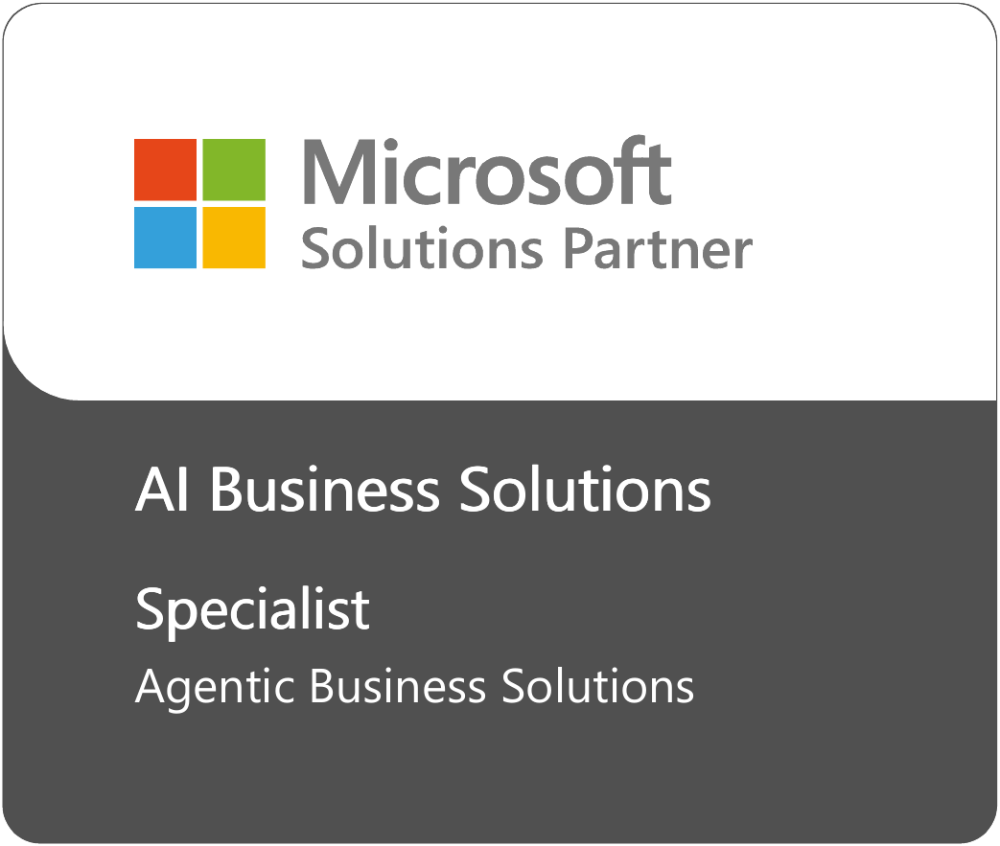
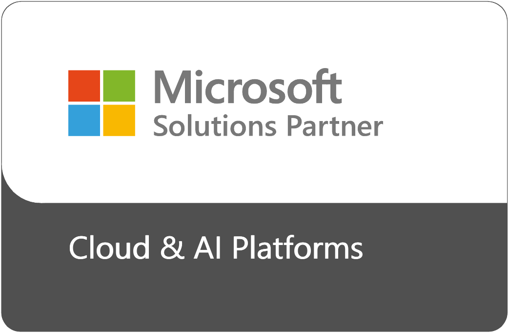
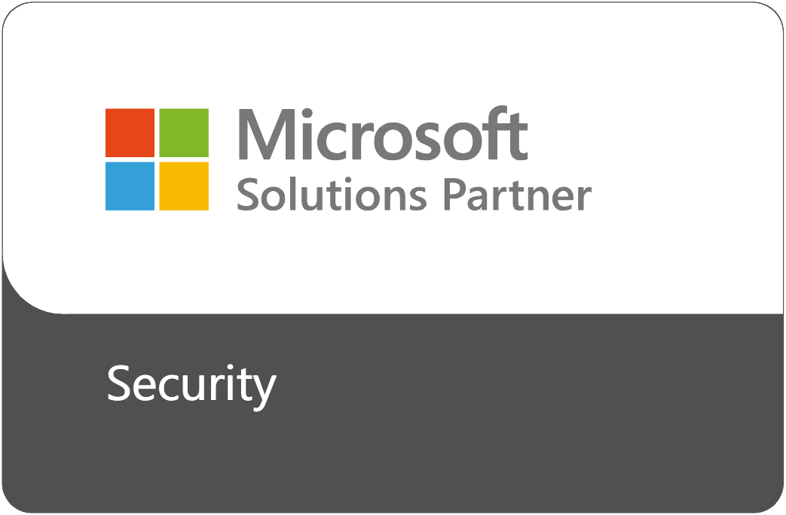
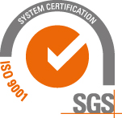
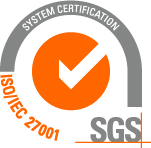

Microsoft Partner of the Year
2019 WinnerMicrosoft Dynamics 365 for SalesLatinoamérica y el Caribe
Trust Center
Todo lo que declaramos se puede verificar.
Credenciales Microsoft, certificaciones ISO, residencia de datos y principios de IA responsable.
Microsoft
Las seis designaciones Solutions Partner y especialización.



Ready Tier
Microsoft Copilot Jumpstart Partner
Conoce el programa
Somos parte del programa oficial de Microsoft que acelera la adopción de IA con Copilot y agentes, con recursos, talleres y engagements financiados por Microsoft para evaluar, planificar e implementar.
Reconocimientos
Microsoft Partner of the Year en Latinoamérica y el Caribe, dos años seguidos.
Premiados por Microsoft en 2019 por nuestras implementaciones de Dynamics 365 for Sales y en 2020 por servicio al cliente proactivo.
Microsoft Partner of the Year
2020 WinnerProactive Customer ServiceLatinoamérica y el CaribeISO · SGS
ISO 9001 e ISO/IEC 27001
Calidad y seguridad de la información, certificadas por SGS. Certificado descargable [PDF].


Datos e IA
Cómo protegemos tu información.
Solutions Partner for Microsoft CloudLas seis designaciones Solutions Partner de Microsoft.
AI Business SolutionsBusiness Applications y Modern Work, con especialización en Agentic Business Solutions.
Cloud & AI Platforms · SecurityData & AI, Digital & App Innovation, Infrastructure y Security.
ISO 9001 · ISO/IEC 27001Calidad y seguridad de la información. Certificado descargable [PDF].
Datos en Chile, en tu tenantImplementaciones en la región desde 2025.
IA responsableSupervisión humana, trazabilidad y datos que no entrenan modelos.
Protección de datos: postura frente a la Ley 21.719 y encargado de datos [placeholder]. Certificaciones del equipo: conteo agregado por área [placeholder].
¿Conversamos sobre tu caso?
Agenda un diagnóstico de 30 minutos. Revisamos tu escenario y te decimos qué conviene y qué no.